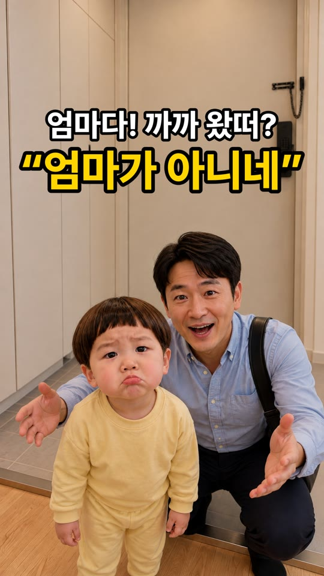
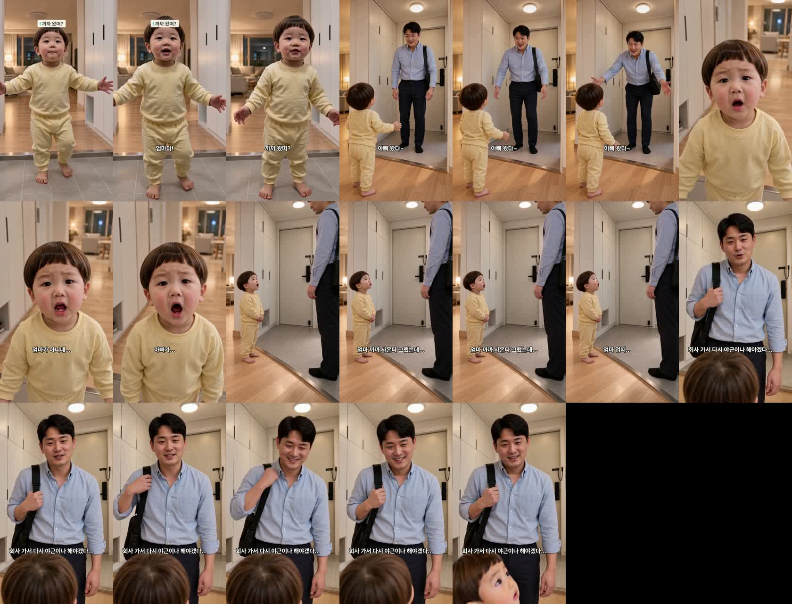
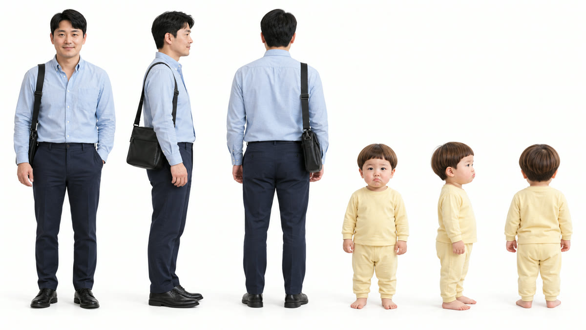

«아빠 왔다~» 편 — 검수
대표님 직접 소재 · 18.8초 · 5컷 · 허브 업로드 대기(79300f95) · 편별 인물 시트 방식 첫 편
완성본

썸네일 — 삐죽 도윤 + 팔 벌린 아빠
대사
- 도윤 «엄마다! 까까 왔떠?»
- 아빠 «아빠 왔다~»
- 도윤 «엄마가 아니네… 아빠가…»
- 도윤 «엄마 까까 사온다 그랬는데… 엄마 업떠…»
- 아빠 «회사 가서 다시 야근이나 해야겠다…»
들어 봐 주세요
- 3·4컷 도윤이 목소리 음높이 296·308Hz — 정본 경고선 330Hz 아래입니다(실망 대사라 낮아짐 · «칭얼거림» 연기로 280에서 올림). 아기 목소리로 들리는지 판정 부탁드립니다.
- 1컷은 도윤이가 마루에서 타일로 한 발 내려옵니다(나머지 컷은 마루 끝).
만들며 고친 것
- 3컷 시작 그림 방향 오류(뒤에 현관문 → 거실로) · 5컷 도윤이 두 명 → 한 명 · 첫 썸네일 도윤이 옆가르마·둘 다 웃음 → 다시.
- 현관 정본 체인 걸쇠를 손잡이 쪽으로 고친 판 사용.
완성본 프레임

이 편 인물 시트
